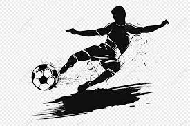
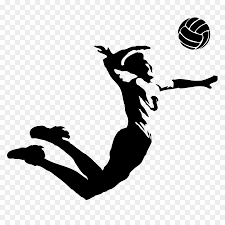
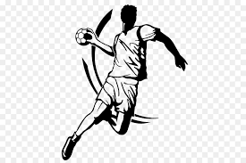

Football
- Le football, c’est une passion pour moi, c’était difficile certes, parce que échouer c’est toujours difficile. Mais je n’ai pas douté, le football, c’est ma passion, c’est ce que j’aime faire je prends plaisir à jouer. Je ne vais pas douter pour si peu. Il y a beaucoup plus difficile dans la vie.

Volleyball
- j'ai passionné du volleyball parce qu'il est Très populaire dans le monde, le volleyball est un sport qui compte aujourd’hui plus d’un million de pratiquants .

Handball
- j'ai pratique le handball depuis que j'ai dix ans, et cela a beaucoup influé sur mon caractère et ma façon d’appréhender les choses. Plus qu’un sport, c’est pour moi une véritable aventure humaine.

Musique
- J'aime écouter de la musique et visualiser ma routine dans ma tête.